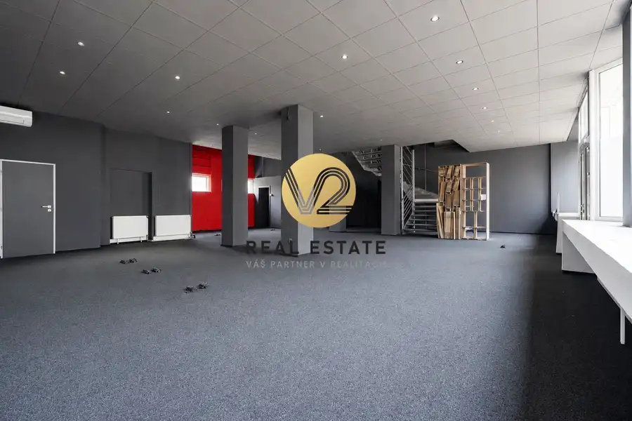
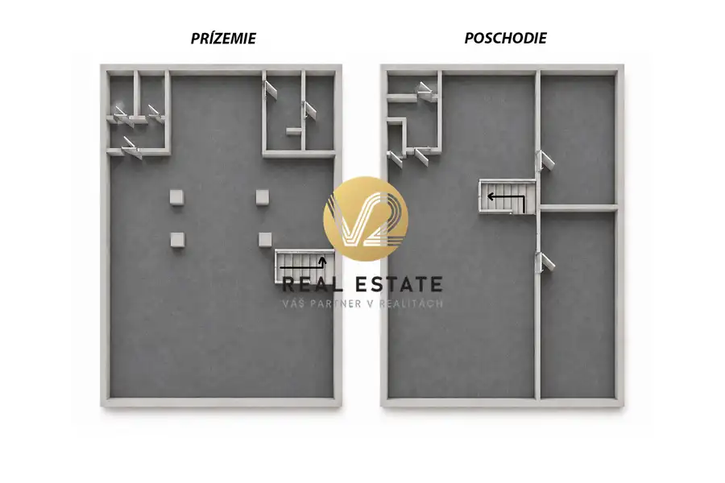
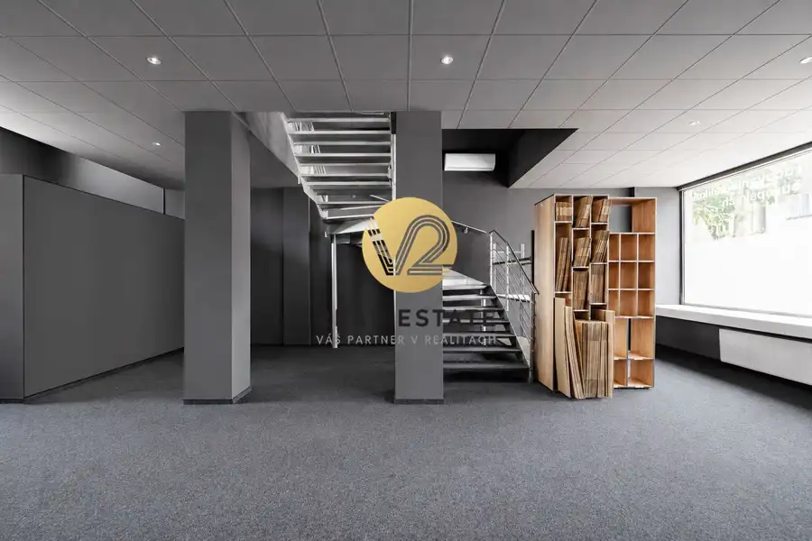
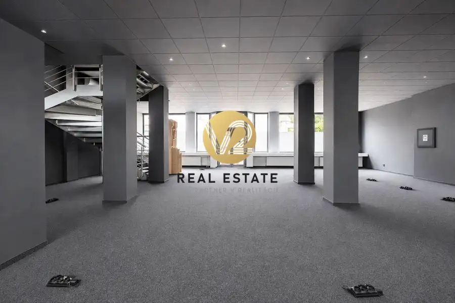
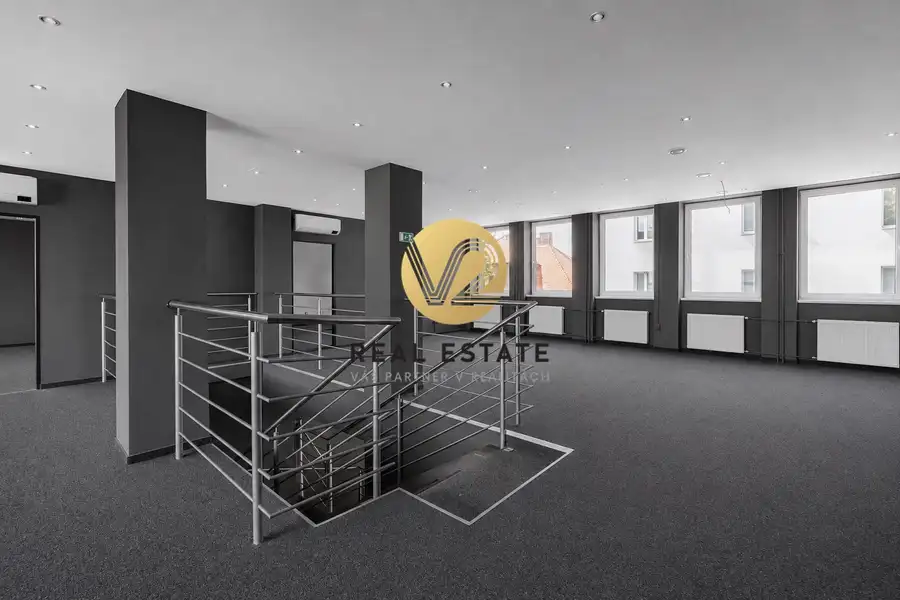
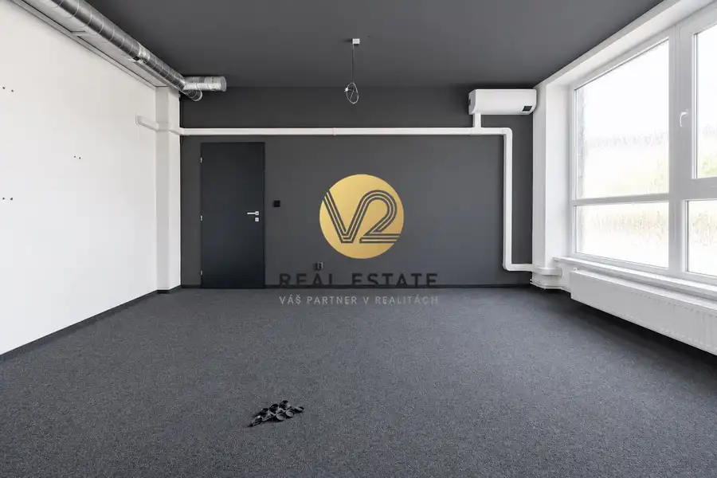
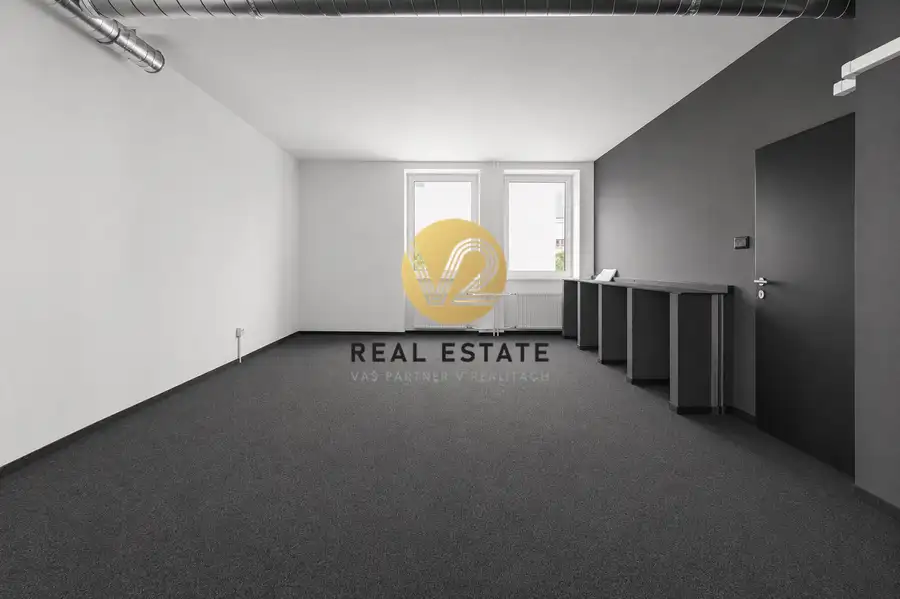
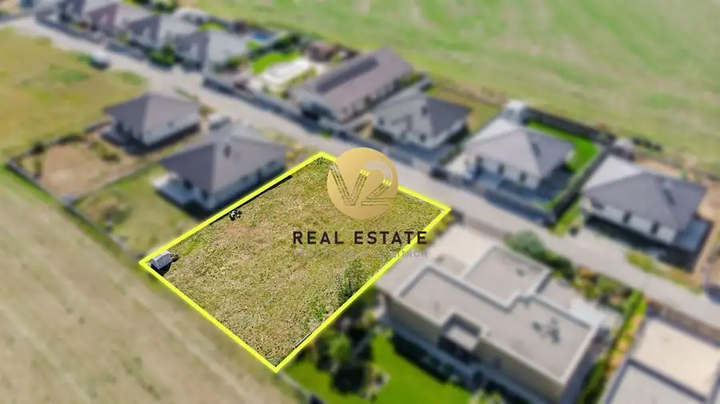
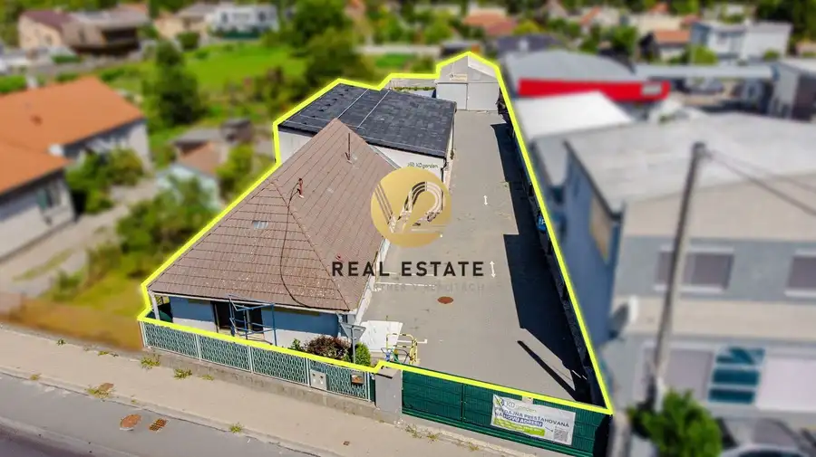
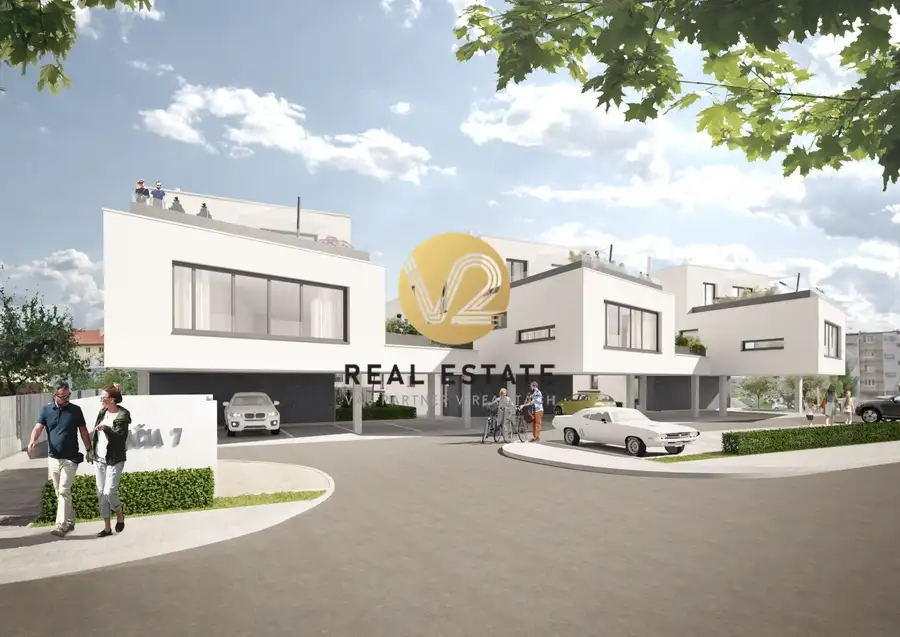

NA PRENÁJOM – Reprezentatívne priestory s parkovaním o výmere 300m2
Nitra







- Plocha300 m²
- StavKompletná rekonštrukcia
O nehnuteľnosti
V2 real estate ponúka priestory na prenájom: lokalita: Nitra – Centrumulica: Kmeťkovavýmera: 300m2 •Kancelárske/obchodné priestory sa nachádzajú v úplnom centre mesta na Kmeťkovej ulici•Vstup do priestorov je priamo z ulice, nachádzajú sa tu aj veľké výklady•Možnosť parkovania vo dvore•Priestory sa rozprestierajú na dvoch podlažiach•Možnosť rozdelenia priestoru 150m + 150m (možnosť prenajatia iba jednej časti)•Možnosť udelenia sídla firmy•Vhodné na podnikateľské účely•Ľahká dostupnosť z ulice, viditeľné a frekventované miesto viac informácií sa dozviete na:t.č. +421 918 938 737e-mail: juraj.kolarik@v2realestate.sk
Parametre
- Druh
- Kancelárie, administratívne priestory
- Dátum zverejnenia
- 22. 07. 2026
- Energetický certifikát budovy
- nie je
- Počet vonkajších parkovacích miest
- 2
- Stav nehnuteľnosti
- Kompletná rekonštrukcia
- Typ
- Prenájom
- Typ konštrukcie
- Tehlová
- Vybavenie
- Vonkajšie parkovacie miesto
- Úžitková plocha
- 300 m²
Kde to je


Mohlo by Vás zaujímať

PozemokNové 135 000 €Na PREDAJ pozemok 969m2, stavebné povolenie a IS, Nitra – Malý Lapáš Malý Lapáš 969 m²
Komerčné priestoryNové 299 000 €Na PREDAJ komerčný objekt s možnosťou dostavby, Nitra - Krškany Nitra 298 m²
BytNové Cena na vyžádáníNa PREDAJ – Stračia pod Kalváriou, veľkometrážny 5-izbový exkluzívny mezonet s priestrannou terasou Nitra 127 m²2. podlažie